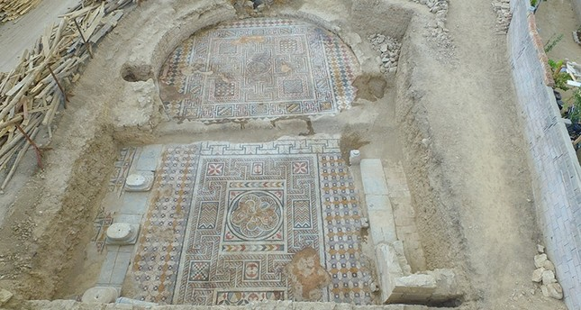
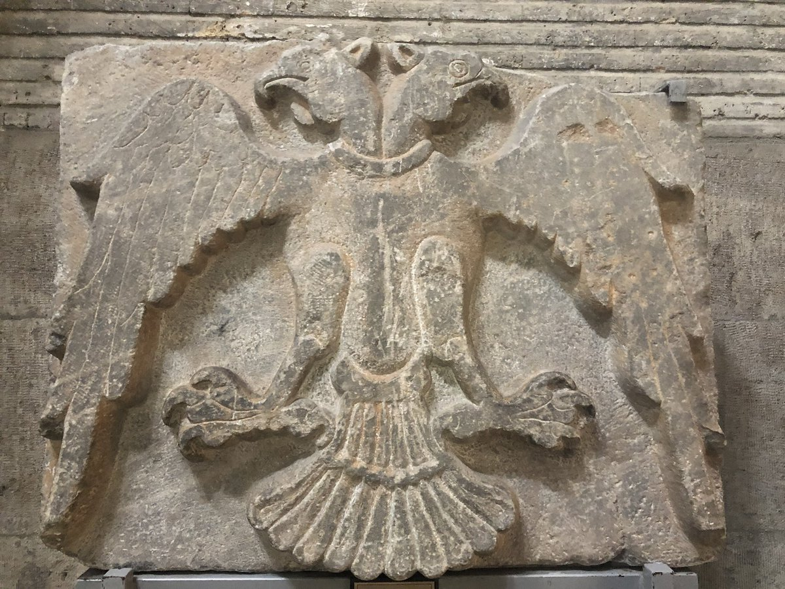
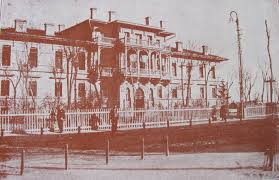
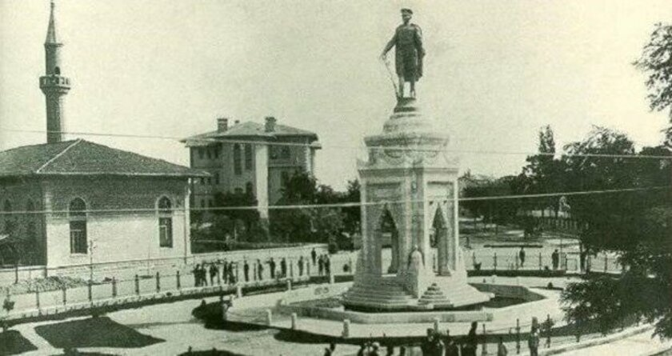

Mirasımız
Adlandırma
İle adını veren Konya şehrinin isminin Kutsal Tasvir anlamındaki
"İkon" sözcüğüne bağlı olduğu iddia edilir. Mitolojide bu konuda
değişik rivayetler bulunmaktadır. Bu hikâyelerden birinde anlatıldığı
üzere, kente dadanan ejderhayı öldüren kişiye şükran ifadesi olarak bir
anıt yapılır ve üzerine de olayı anlatan bir resim çizilir. Bu anıta
verilen isim, İkonion dur. İkonion adı, zamanla İcconium'a dönüşür.
Konya ismi diğer bir efsaneye göre şöyle ortaya çıkmıştır ; doğudan gelen iki veli, rüzgâr hızıyla uçar gibi Anadolu içlerinde ilerlemektedir. Uzun zamandan beri epeyce yol katetmişlerdir. Yemyeşil ovaları, şırıl şırıl pınarları, berrak akan ırmakları bulunan bir yere gelince istirahat etmek isterler. Biri diğerine "Konalım mı?" (''Konaklayalım mı'' anlamında) diye sorar. Diğer vel-i zat bu teklifi beklemektedir sanki; "Ne duruyorsun kon, ya!" der. Böylece burada kurulan yeni İl "Konya" adıyla tanınır,"Konya" adıyla bilinir.
Roma döneminde İmparator adlarıyla değişen, Claudiconium, Colonia Selie, Augusta İconium gibi yeni adlar alır. Bizans kaynaklarında Tokonion olarak geçen şehre ve bölgeye verilen diğer isimler şöyledir: Ycconium, Conium, Stancona, Conia, Cogne, Cogna, Konien, Konia...
Araplar kentin ismini Kuniya olarak değiştirmişlerdir, Selçuklu ve Osmanlı döneminde bu ad Konya'ya dönüşmüştür. Günümüzde de kent hala Konya adını taşımaktadır.
Tarihçe
Tarih Öncesi Dönem
Konya, Türkiye'deki en eski yerleşim birimlerinden biridir.
Konya'da yerleşimin Prehistorik (Tarih öncesi) çağdan başladığı görülmektedir.
Konya'nın merkezinde yer alan ve aynı zamanda bir höyük olan, Anadolu Selçuklu
sultanı II. Alaeddin Keykubad'a nispetle Alâeddin Tepesi adı verilen suni tepe ve
çevresinde yapılan araştırmalar sonucu, prehistorik çağ içinde gerek Neolitik
(Cilalı Taş Devri) ve Kalkolitik ve gerekse Erken Bronz Çağlarına ait kültürel
bulgulara rastlanmıştır.
Yine prehistorik çağa ait höyüklerden, merkeze 15 km mesafede yer alan ve Konya'nın
bugünkü merkez Harmancık mahallesinde yer alan Karahöyük ve Konya Ovası üzerinde,
bulunmuş en eski ve en gelişmiş Neolitik devir yerleşim merkezi olan Çatalhöyük
bulunmaktadır.
Roma Dönemi
Anadolu ve Suriye topraklarında büyük bir imparatorluk kuran Hititler Konya'ya da
hakim olmuşlardır. Hititler'den sonra Friglerin egemenliğine giren Konya (Kavania)
daha sonra Lidyalılar, Persler ve Büyük İskender'in istilalarına uğramıştır. Sonraları
Anadolu'da Roma hakimiyeti sağlanınca Konya İconium olarak varlığını korumuştur.
Önemini Roma ve Bizans dönemleri boyunca korumuş olan şehir, Hıristiyanlığın ilk
yıllarında dini bir merkez hüviyeti de kazanmıştır. Aziz Paul Anadoludaki dinî
seyahatleri sırasında Konya'ya da uğramıştır.
Selçuklu Dönemi
İslamiyetin doğuşuyla beraber Doğu Roma İmparatorluğu aleyhine büyüyen İslam Devleti,
İstanbul'u hedef alan harekatları sırasında Konya üzerine de akınlar düzenlemişlerdir.
Anadolu'da ve Konya çevresinde ilk İslami oluşumlar bu devirde ortaya çıkmıştır.
1071 senesinde Malazgirt Ovası'nda yapılan Malazgirt Savaşı'ndan önce Anadolu üzerine
keşif harekatları düzenleyen Türkler ve Anadolu'yu tanıyan Büyük Selçuklular, bu savaş
sonucu Anadolu'nun büyük bir kısmı ile beraber Konya'yı da, ele geçirmişler ve bölgedeki
uzun Bizans hakimiyetine son vermişlerdir.
Süleyman Şah 1076 yılında Konya'yı Anadolu Selçukluları'nın başkenti yapmış, bilahare
başkent 1080 yılında İznik'e nakledilmiştir. İlk haçlı seferi sırasında İznik şehri tekrar
Bizans'ın eline geçmiş, sultan I. Kılıçarslan da 1097 tarihinde başşehri tekrar Konya'ya
taşımıştır. Bu tarihten 1277 yılına kadar Konya aralıksız Anadolu Selçuklu Devleti'nin başkenti
olmuştur. I. Alaeddin Keykubad (1220-1237) devrinde şehrin etrafına muhkem bir sur inşa
edilmiştir ve Konya Anadolu'nun en büyük şehri olmuştur. Selçuklular devrinde şehirde
cuma namazı kılınan yedi büyük cami vardı. Toplam şehir nüfusu 45.000-50.000 arasında
tahmin ediliyor.
Osmanlı Dönemi
Şehir 1467 senesinde kalıcı Osmanlı egemenliğine geçmiştir. Sultan II. Mehmed Konya'yı zaptederek Karamanoğlu hakimiyetine son vermiştir. Osmanlı devrinde Konya önce Karaman Eyaletinin sonra da Konya Vilayetinin merkezi olmuştur. Osmanlı Rus Savaşı ve Balkan Harbi sonunda zorunlu göçe zorlanmış yüz binlerce müslüman[6] Arnavut, Çerkes, Boşnak kökenli Balkan ve Kafkas muhaciri tarıma elverişli olması sebebiyle Konya ve İlçelerine İskan edilmişlerdir.
Kurtuluş Savaşı Dönemi
Millî mücadelenin başlamasıyla Konya bu kutsal mücadelenin içinde yer almış, ancak
istenmeyen ve Konya halkınca pek tasvip görmeyen bazı olayların gelişmesi, bir takım
yanlış anlamalara, gerçekle pek alakası olmayan yorumlara yol açmıştır.
Müdafaa-i Hukuk Cemiyeti, Vali’nin Artin Cemal’in yanı sıra Konya’daki Amerikalı Miss Kouchman,
İngiliz Rahip Rew Frew, Dr. İpokrat, Kirkor Şişmanyan, Rodoslu Nikola Samarcidis ve Kıbrıslı
Kemal Subhuezel gibi ajanların, azınlık temsilcilerinin tabi Damat Ferit ve Zeynel Abidin’in
her türlü engelleme, çabalarına rağmen kurulmuştur. Tabii Konya Müdafaa-i Hukuk Cemiyeti’nin
Kadınlar Şubesinin kurulması da önemlidir.
Konya Müdafaa-i Hukuk Cemiyeti Başkanı Sivaslı Ali Kemal’in çalışmaları, çabaları Mustafa Kemal Paşa
tarafından takdir edilmiştir. Müdafaa-i Hukuk Cemiyeti’nin bu çalışmalar içinde önemsediğim İşgale ve
işgalcilerin uygulamalarına karşı düzenlenen protesto mitingleridir. Bu mitinglerle Konya halkının
tepkisi dile getirilmiş, hem de halkın birlik beraberliğinin oluşması sağlanmıştır. Hele o günlerde
ilk kadın mitingi Konya’da yapılmış, işgale karşı Konyalı kadınlarımızın tepkisi bu mitingle ifade
edilmiştir.
Konya, işgal görmeyen Ankara, Kayseri, Yozgat, Çorum, Çankırı gibi iç Anadolu şehirleriyle
birlikte kurtuluş savaşında ordunun ihtiyaçlarının karşılandığı lojistik merkezi olmuştur.
Cephede savaşan ordunun ihtiyaçları Konya’da toplanmış ve cepheye buradan gönderilmiştir.
Konya, cepheden gelen yaralı ve hastaların tedavi gördüğü merkez olmuştur.
Cumhuriyet Dönemi
Konya, 1987 yılında çıkarılan 3399 sayılı kanun ile büyükşehir unvanı kazandı. Başlangıçta üç ilçe (Karatay, Meram ve Selçuklu) Konya Büyükşehir Belediyesi'nin sınırlarına dahil edildi. 2004 yılında çıkarılan 5216 sayılı kanun ile büyükşehir belediyesinin sınırları valilik binası merkez kabul edilerek yarıçapı 30 kilometre olan dairenin sınırlarına genişletildi. 2012 yılında çıkarılan 6360 sayılı kanun ile 2014 Türkiye yerel seçimlerinin ardından büyükşehir belediyesinin sınırları il mülki sınırları oldu.




